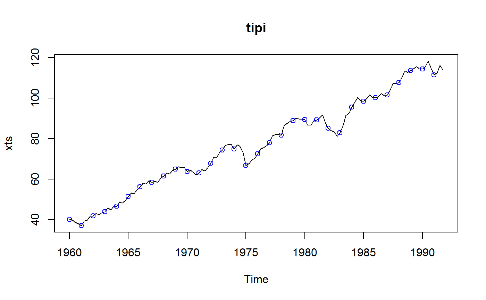

availStart.RdTime of first or last non-NA value.
availStart(x) availEnd(x)
| x | a time series or similar object |
|---|
The time is given as a cycle-season pair.
The functions can be used to trim NA's from the beginning or
end of the data.
numeric, length 2
#> [1] 1955 1end(tipi)#> [1] 1991 4head(tipi)#> An object of class "PeriodicTS" #> Slot "cycle": Start: 1955 Quarter_1 #> Cycle: QuarterYearCycle #> Number of seasons: 4 #> #> Q1 Q2 Q3 Q4 #> 1955 NA NA NA NA #> 1956 NA NAtail(tipi)#> An object of class "PeriodicTS" #> Slot "cycle": Start: 1990 Quarter_3 #> Cycle: QuarterYearCycle #> Number of seasons: 4 #> #> Q1 Q2 Q3 Q4 #> 1990 118.3 114.5 #> 1991 111.4 112.4 116.0 113.9#> [1] 1960 1end(tipi)#> [1] 1991 4plot(tipi)#> An object of class "PeriodicMTS" #> Slot "cycle": Object from built-in class 'QuarterYearCycle' #> Cycle start: Quarter_1 #> #> USTotalIPI CanadaUnemployment GermanyGNP #> 1955_1 NA NA NA #> 1955_2 NA NA NA #> 1955_3 NA NA NA #> 1955_4 NA NA NA #> 1956_1 NA NA NA #> 1956_2 NA NA NAtail(pcfr2to4)#> An object of class "PeriodicMTS" #> Slot "cycle": Object from built-in class 'QuarterYearCycle' #> Cycle start: Quarter_1 #> #> USTotalIPI CanadaUnemployment GermanyGNP #> 1990_3 118.3 NA 468.9 #> 1990_4 114.5 NA 482.9 #> 1991_1 111.4 NA NA #> 1991_2 112.4 NA NA #> 1991_3 116.0 NA NA #> 1991_4 113.9 NA NA#> [1] 1955 1#> [1] 1991 4## time of first nonNA: availStart(pcfr[[2]]) # 1960 Q1#> [1] 1960 1availStart(pcfr2to4) # 1960 Q1#> [1] 1960 1## time of last nonNA: availEnd(pcfr[[2]]) # 1991 Q4#> [1] 1991 4availEnd(pcfr[[3]]) # 1987 Q4#> [1] 1987 4availEnd(pcfr[[4]]) # 1990 Q4#> [1] 1990 4## but at least one of them is available for 1991 Q4, so: availEnd(pcfr2to4) # 1991 Q4#> [1] 1991 4pcfr2to4a <- window(pcfr2to4, start = availStart(pcfr2to4), end = availEnd(pcfr2to4)) head(pcfr2to4a)#> An object of class "PeriodicMTS" #> Slot "cycle": Object from built-in class 'QuarterYearCycle' #> Cycle start: Quarter_1 #> #> USTotalIPI CanadaUnemployment GermanyGNP #> 1960_1 40.2 583 167.0 #> 1960_2 39.8 427 176.2 #> 1960_3 38.5 334 198.0 #> 1960_4 38.0 439 190.5 #> 1961_1 37.1 703 180.1 #> 1961_2 39.2 480 184.9tail(pcfr2to4a)#> An object of class "PeriodicMTS" #> Slot "cycle": Object from built-in class 'QuarterYearCycle' #> Cycle start: Quarter_1 #> #> USTotalIPI CanadaUnemployment GermanyGNP #> 1990_3 118.3 NA 468.9 #> 1990_4 114.5 NA 482.9 #> 1991_1 111.4 NA NA #> 1991_2 112.4 NA NA #> 1991_3 116.0 NA NA #> 1991_4 113.9 NA NA